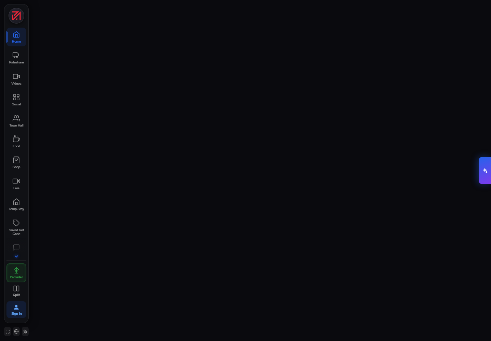

ONGOING PROJECT · FULL STACK DEVELOPER
Strug — A Multi-Service Digital Platform
An ambitious application bringing work, commerce, services and community experiences into a shared product environment.

Platform overview
Strug describes itself through the message “Your Work. Your Time. Your Money.” Its public ecosystem spans marketplace, social and service verticals—including e-commerce, freelancing, rideshare, on-demand work, rentals, events and other everyday needs.
The application challenge is broader than a single-purpose website. A large number of product areas must remain discoverable while accounts, interactions and shared platform behaviour stay coherent for different types of users.
My ongoing contribution
I contribute to Strug as a full-stack developer. Since the product remains under active development, this case study focuses on the publicly visible platform and accurately describes the engagement without exposing confidential architecture or claiming unverified metrics.
Multi-area experience
Supporting application flows across a product that includes service, commerce and community destinations.
Full-stack functionality
Working across user-facing interfaces and the application functionality required behind those experiences.
Responsive navigation
Helping keep a broad feature set usable across viewport sizes and different user journeys.
Active product iteration
Contributing within an evolving platform where requirements and individual verticals continue to develop.
Current outcome
The live application provides a unified entry point into Strug's growing set of modules, while the public product ecosystem explains its affordability and user-control principles. Verified launch metrics are not yet included because the engagement is ongoing; this case study can be expanded as public milestones are reached.
Building a complex web platform?
I am available for remote full-stack projects and long-term product collaboration.
Discuss Your Project